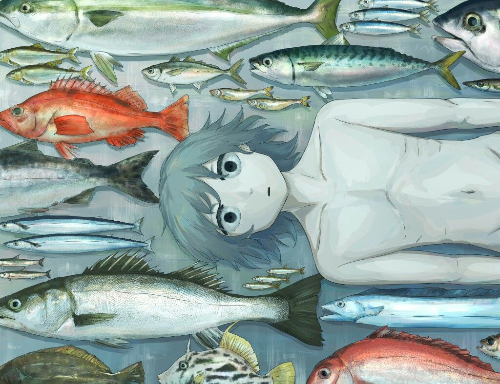

Reflexões
Sobre não querer entender, tarde demais..
Minha consciencia me pertubando...
Continuar lendoUM ESPAÇO AUTORAL
“Arranque toda a minha roupa e ainda não poderá ver o que sou.”
— Charlie Barkley
PALAVRAS, PENSAMENTOS E FRAGMENTOS
Pequenos universos que merecem um lugar no papel.

Minha consciencia me pertubando...
Continuar lendo
Um texto sobre dias difíceis, culpa, ausência e a complexidade dos vínculos afetivos.
Continuar lendoNão sou calma. Não sou delicada. Sou uma fera prestes a rasgar qualquer um em pedacinhos...
Continuar lendoEste espaço está em construção. Aos poucos, novos escritos vão encontrar seu lugar por aqui.
OUTROS CAMINHOS PARA EXPLORAR